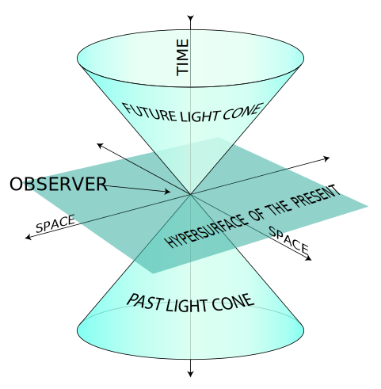
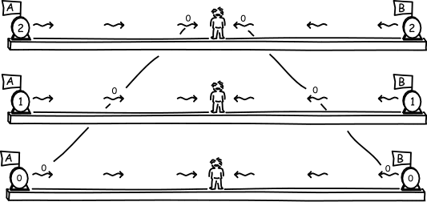
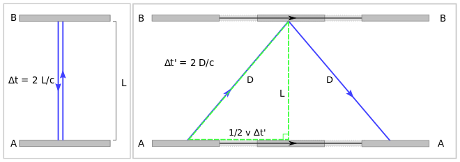

Special Relativity
0.Introduction
Special relativity is one of the most important theoy in modern physcis. In 1905 Albert Einstein developed
the theory of special relativity. This theory explains the limit on an object's speed and describes the
consequences. In Albert Einstein's original treatment, the theory is based on two postulates:
- The laws of physics are invariant (that is, identical) in all inertial frames of reference (that is, frames of reference with no acceleration).
- The speed of light in vacuum is the same for all observers, regardless of the motion of the light source or observer.
1.Newtonian Physics
1.1.Reference Frame
1.1.1.Relativity
Nothing is absolute rest, nothing is absolute moving. Ancient people recognize that they cannot distinct they are moving or not when they are on the boat. If you want to discribe your motion, you have to find a reference, in physics, we call it "frame of reference".
1.1.2.Inertial Frame of Reference
An inertial frame of reference (or a rest frame) is one that is moving in uniform motion. E.i. no interial force act on object in this frame of reference
1.2.Absolute Time, Absolute Length
In Newtonian physics, although they recognize the motion is relative, they think time is absolute and length is absolute as well. 1 secend in my frame of reference is exactly same in your frame of reference. 1 metre in my frame of reference is also exactly same in your frame of reference. This makes sense to most of people since 17th century to 20th century.
1.3.Galilean Relativity
One of the direct consequences of absolute time and length is Galilean relativity.
The transformation follows this:
- Relative position: XAC = XAB + XBC
- Relative velocity: VAC = VAB + VBC
- Relative acceleration: AAC = AAB + ABC
Properties:
In an inertial frame, Newton’s first and second laws of motion are valid; Since all uniform
motion are treated the same way, you may consider any inertial
frames of reference to be at rest.
The Principle of Relativity:
All laws of motion must apply equally in all inertial frames of reference.
2.Challenge
2.1.Maxwell's Equations
This is Maxwell's equations:

Learn more about Maxwell's
Equations
The first two equations are called "Gauss' Law", it demostrates that the electric field come from
a e+ particle to a e- particle, and magnetic field are closed pathes.
The thrid equation is called "Faraday's law", it shows that change of magnetic field can create
electric field. The fourth equation is called "Ampere's law", it reveals that change of electric
field can create magnetic field.
The most important consequence of Maxwell's equation is light is electromagnetic waves. When conbine
last two equations, it derives that :
c=1⁄√εμ=299792458 m/s
However, as we mentioned before, the velocity need a frame of reference, what's the frame of
reference of the speed of light? The equations do not give us the answer. In addition, it has
these peculiar features:
- Does not mention the medium in which EM waves travels
- When applying Galilean transformation (from which we obtain the velocity addition rule) to Maxwell’s equations, asymmetry is introduced
- Gauss’s law for magnetism break down: magnetic field lines appear to have beginnings/ends
- In some inertial frames of reference, Maxwell’s equations are simple and elegant, but transform the equation into another inertial frame, the equations are ugly and complex!
- Physicists at the time began to theorize that (perhaps) there is an actual preferred inertial frame of references
- This seems to violate the principle of relativity
2.2.The Illusive Ether
In this case Maxwell constract a hyothesis: the speed of light c0 is relative to a hypothetical subtance called luminiferous aether (or just ether) that permeates the universe. Ether must have some fantastic properties:- All space is filled with ether
- Massless
- Zero viscosity
- Non-dispersive
- Incompressible
- Continuous at a very small (sub-atomic) scale
2.3.The Michelson-Morley Experiment
Please read the article from wikipedia.
Key facts:
- The experiment demonstrates that the speed of light travels horizontally and vertically is the same.
- Lorentz, the person who wanted to save both the theory and the experiment, he generated his Lorentz transformation:
3.Special Relativity

1905 is the most thrift year in Modern Physics, Albert Einstein published his 5 most important paper. One of them is "On the Electrodynamics of Moving Bodies" - Special Relativity. He construct Postulates of Special Relativity to explain the Michelson-Morley experiment:
- The Principle of Relativity: All laws of physics must apply equally in all inertial frames of reference.
- The Principle of Invariant Light Speed: As measured in any inertial frame of reference, light always propagates in a vaccum with a definite velocity c0, independent of the state of motion of the emitting body.
The difference in Einstein's theory:
- The speed of light is absolute (invariant), therefore
- Space and time must be relative to the observer.
3.1.Simultaneity
The direct consequence of Einstein's theory is that change our understanding of Simultaneity.

Let's do a thought experiment. Imagining there is train runing at .5c, two beams of light shoot from the equal
distance to the person on the train. At the Same time, there is a person stand right on the position of the person on the train.
Due to the 'The Principle of Invariant Light Speed', the person who doesn't move see the light beams at the same time;however,
the person on the train see the light in front of him/her before the light behind him. Therefore, the Simultaneity is actually depend the frame of reference!!!
3.2.Time Dilation
Einstein is really familiar with thought experiemnt, so, let's do another one.

Let's assume you are on a spaceship that travels at a speed v s.t. v is close to c. Now you have two parallel mirror as showed above,
it photon then travels between these mirror. In you point of view, you and these mirrors are relative static, and the time cost
the photon to travel A-B-A is ∆t=2L/c. On the other hand, a person who is rest to the ground saw that the time cost the photon to
travel A-B-A is ∆t'=2D/c. Moreover, by pythagorean theorem D^2=L^2+(1/2v∆t')^2. When combine these equations, we get the time dilation formula:

Example1
Kim is riding a rocket that speeds past an asteroid at v = 0.600c. If Kim sees 10.0 s pass on her watch, how long would that time interval be as seen by Jim, an observer on the asteroid? (3s.f.)
Example2
Kim is riding a rocket that speeds past an asteroid at 0.600c. If Jim, an observer in the asteroid, sees 10.0 s pass on his watch, how long would that time interval be as seen by Kim? (3s.f.)
3.3.Length Contraction
The consequence of Time dilation is Length Contraction:

Therefore:

Example1
Captain Quick is a comic book hero who can run at nearly the speed of light. In his hand, he is carrying a bomb set to explode in 1.5 μs. The bomb must be placed into its bracket before this happens. The distance (L) between the flare and the bracket is 402 m. How far did he travel? Can he finish the mission?3.4.Relative Velocity
Unlike in classical mechanics, velocities (speeds) do not simply add. We have to account for time dilation and length contraction, which are included in the Lorentz transformation
Einstein velocity addition rule:

3.5.Relativistic Momentum
The defination of momentum still the same:
Therefore, subsitute x with Relativistic length:
3.6.Relativistic Mass
From the relativistic momentum expression, we see the relativistic aspect to mass as
well:
3.7.Relativistic Energy
The last topic is energy, and it is also the most importatn consequence of special relativity.
The defination of work does not change:

Therefore:

let:
Assuming that both v and p are continuous in time, we can apply the product rule:

sub it back to integral:

By defination of γ:

sub it back:

Therefore:

consequencely:
This is the most famous eqation and it is the fundation of atomic bomb!!!